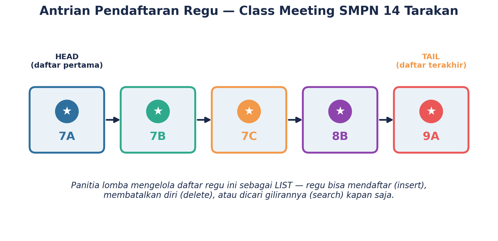
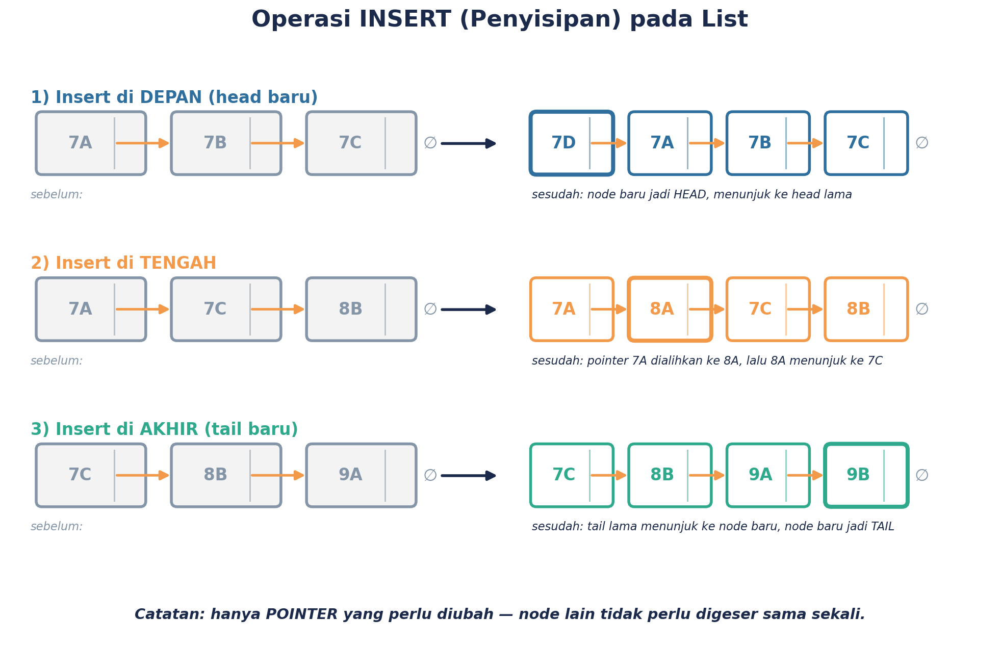
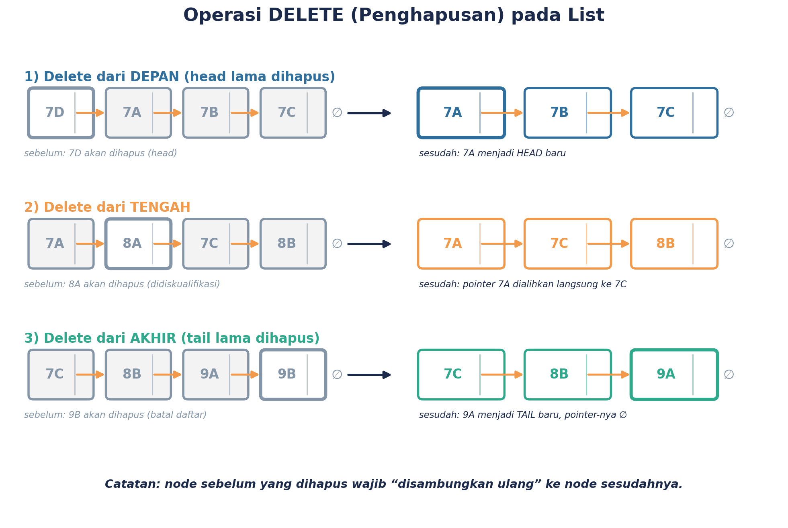
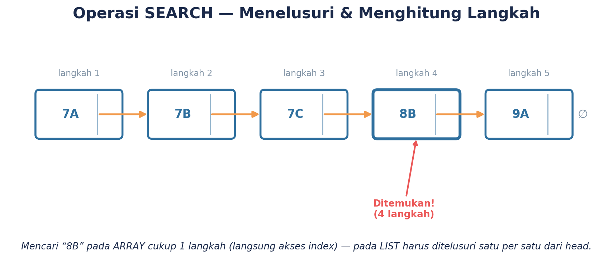
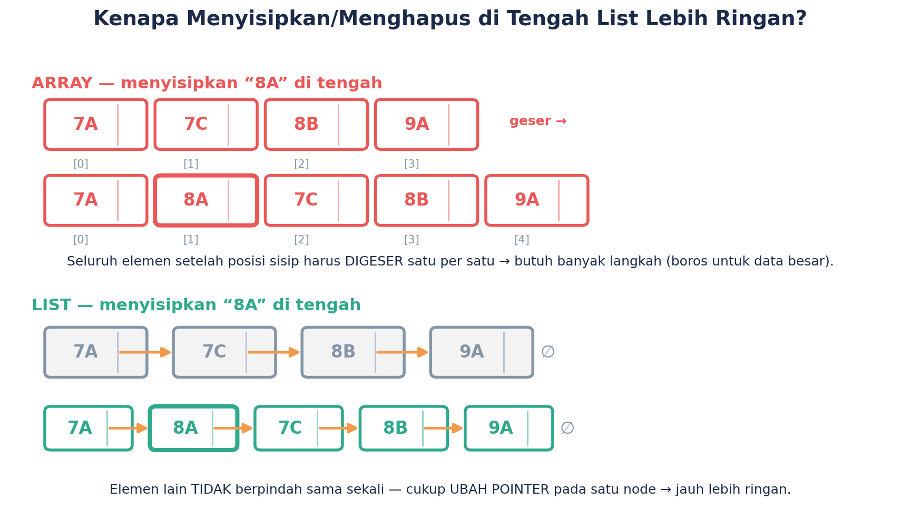

Yuk, Ingat-Ingat Dulu
Di pertemuan sebelumnya, kamu udah kenalan sama LIST — kumpulan node yang saling terhubung lewat pointer, mulai dari HEAD sampai TAIL, dan cara menelusurinya (TRAVERSAL). Sekarang, saatnya level-up! Kita nggak cuma menelusuri list, tapi juga belajar cara mengubahnya.
Tujuan belajar kita hari ini:
- Bisa nambahin data baru ke list (INSERT) — di depan, di tengah, atau di akhir.
- Bisa menghapus data dari list (DELETE) — di depan, di tengah, atau di akhir.
- Bisa mencari data tertentu di list (SEARCH) sambil menghitung langkahnya.
- Mulai kenalan sama pseudocode — cara menuliskan langkah-langkah secara ringkas.
- Bisa jelasin kenapa list lebih "gesit" dibanding array buat urusan tambah-hapus data.
1. Ceritanya Gini...
SMPN 14 Tarakan lagi heboh mempersiapkan Class Meeting! Panitia OSIS mencatat pendaftaran regu lomba sebagai sebuah LIST — dimulai dari 7A, lalu 7B, 7C, 8B, sampai 9A (jadi head-nya 7A, tail-nya 9A). Tapi sepanjang hari pendaftaran, banyak hal terjadi: ada regu baru yang mendadak mau ikutan, ada yang tiba-tiba mengundurkan diri, bahkan ada permintaan supaya regu tertentu didahulukan.
Gimana caranya panitia mengurus semua perubahan itu tanpa harus menulis ulang seluruh daftar dari awal? Yuk kita bongkar satu-satu triknya!
2. INSERT: Nambahin Regu Baru
INSERT artinya menyisipkan node (data) baru ke dalam list. Yang keren dari list: kita nggak perlu menggeser semua data lain, cukup mengubah pointer beberapa node saja!
INSERT DEPAN
Node baru jadi HEAD baru. Contoh: regu 7D mendaftar dan diberi prioritas paling depan.
INSERT TENGAH
Node baru disisipkan di antara dua node. Contoh: regu 8A menyusul, disisip antara 7C dan 8B.
INSERT AKHIR
Node baru jadi TAIL baru. Contoh: regu 9B mendaftar paling terakhir.

Perhatikan: cuma pointer yang berubah warna (disorot) — node lain nggak perlu digeser sama sekali!
3. DELETE: Regu yang Mengundurkan Diri
Kebalikan dari INSERT, DELETE artinya menghapus sebuah node dari list. Triknya: node yang mau dihapus cukup "dilompati" — pointer node sebelumnya langsung diarahkan ke node sesudahnya.
DELETE DEPAN
Head lama dibuang, node kedua jadi head baru. Contoh: regu 7A mengundurkan diri.
DELETE TENGAH
Node sebelumnya "melompati" node yang dihapus. Contoh: regu 7C didiskualifikasi.
DELETE AKHIR
Node kedua dari belakang jadi tail baru, pointer-nya jadi ∅. Contoh: regu 9A mengundurkan diri.

Node yang dihapus cukup "dilewati" — nggak perlu menggeser posisi node lain.
4. SEARCH: Nyari Regu Tertentu
Bayangin wali kelas 8B nanya ke panitia: "regu kelas kami udah terdaftar urutan ke berapa, ya?" Panitia harus SEARCH alias mencari data itu di dalam list. Bedanya sama array: kalau array bisa langsung "loncat" ke nomor urut tertentu, list harus ditelusuri satu-satu dari head sampai ketemu!

Mencari "8B": mulai dari head (7A), lanjut satu-satu, sampai ketemu di langkah ke-4.
5. List vs Array: Siapa Lebih Gesit?
Coba lihat gambar berikut: mau nyisipin data di TENGAH, apa yang harus dilakukan array vs list?

Array harus menggeser SEMUA elemen setelah posisi sisipan. List cuma perlu mengubah 1–2 pointer aja, beres! Makanya, list jadi pilihan yang oke banget buat data yang sering berubah-ubah.
6. Kenalan Sama Pseudocode
Gimana caranya kita "nulis" langkah-langkah INSERT, DELETE, SEARCH tadi dengan rapi? Di sinilah PSEUDOCODE berperan — cara menuliskan langkah-langkah penyelesaian masalah pakai kata-kata dan simbol yang ringkas, nggak terikat bahasa pemrograman tertentu.
INSERT_DEPAN(list, data_baru):
buat node_baru berisi data_baru
node_baru.pointer ← head
head ← node_baru
SEARCH(list, target):
langkah ← 0
mulai dari head
selama node sekarang tidak kosong:
langkah ← langkah + 1
jika data node sekarang == target:
tampilkan "ditemukan" dan langkah
berhenti
pindah ke node.pointer
Kenapa harus belajar pseudocode?
- Supaya langkah penyelesaian masalah bisa dicatat rapi sebelum ditulis jadi kode program beneran.
- Pseudocode nggak terikat bahasa pemrograman tertentu — jadi siapa pun bisa membacanya.
- Ini bekal penting buat materi-materi berikutnya di Bab 1!
7. Simulator List Interaktif — Coba Sendiri! Mandiri
Yuk praktikkan langsung! Coba INSERT, DELETE, dan SEARCH pada list "Antrian Pendaftaran Regu" di bawah ini. Perhatikan node mana yang berubah setiap kali kamu melakukan sebuah operasi.
8. Kuis Dadakan — Cek Pemahamanmu! Kuis
Pilih salah satu jawaban pada tiap soal untuk melihat apakah jawabanmu tepat.
1. Saat INSERT DEPAN dilakukan pada sebuah list, apa yang berubah?
2. Mengapa DELETE di tengah list tidak perlu menggeser node-node lain?
3. Kalau kita SEARCH data pada posisi ke-3 dari 5 node, berapa langkah traversal yang dibutuhkan?
Rangkuman
| Operasi | Penjelasan Singkat |
|---|---|
| INSERT | Menambah node baru — depan/tengah/akhir — cukup dengan mengubah pointer, tanpa menggeser data lain. |
| DELETE | Menghapus node dari list — node yang dihapus cukup "dilompati" lewat perubahan pointer. |
| SEARCH | Menelusuri list dari head sampai data yang dicari ditemukan, sambil menghitung langkah. |
| Efisiensi | List lebih gesit dibanding array untuk operasi tambah/hapus, karena tidak perlu menggeser banyak data. |
| Pseudocode | Cara menuliskan langkah-langkah penyelesaian masalah secara ringkas, bekal menuju penulisan algoritma yang lebih formal. |
Yuk, Refleksi Sebentar
- Menurutmu, operasi mana yang paling gampang: INSERT, DELETE, atau SEARCH? Kenapa?
- Bagian mana yang masih bikin kamu bingung? Coba tanyakan ke gurumu!
- Coba bayangkan satu situasi sehari-hari yang mirip dengan INSERT atau DELETE pada list — ceritakan singkat!